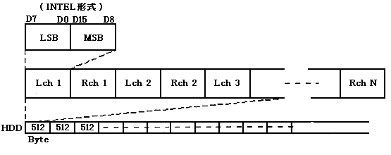

★PROGRAMMER'S GUIDE
★バーチャルCDシステム
★PROGRAMMER'S GUIDE
★バーチャルCDシステム
▲
戻る｜
■
バーチャルCDシステムユーザーズマニュアル/第５章 ＣＤエミュレーション関連ツール
5.4 バイトスワップツール SWAP
5.4.1 コマンド仕様
- コマンド：
- SWAP
- コマンド名：
- バイトスワップ
- 書式：
- SWAP△[ -v ]△旧ファイル名△新ファイル名
- 引数：
- 旧ファイル名：バイトスワップの対象となるDOSファイル名
新ファイル名：バイトスワップの結果、作成されるDOSファイル名
- オプション：
- −v 使用法を表示します
- 機能：
- 指定されたDOSファイルのバイト順を変換し、新DOSファイルを作成します。
5.4.2 CDDAファイルフォーマットについて
- バーチャルCDシステムで受け付けるCDDAデータファイルはインテル系のリトルエンディアン形式のバイトオーダーでなければなりません。
CDDAデータファイルがモトローラ系のビッグエンディアン形式のバイトオーダーとなっている場合、本ツールを使用してデータ変換を実行します。
図 CDDAファイルフォーマット

▲
戻る｜
■
★PROGRAMMER'S GUIDE
★バーチャルCDシステム
Copyright SEGA ENTERPRISES, LTD,. 1997